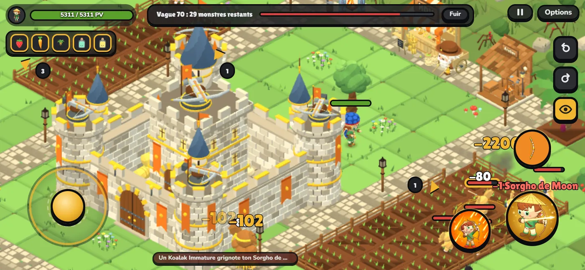
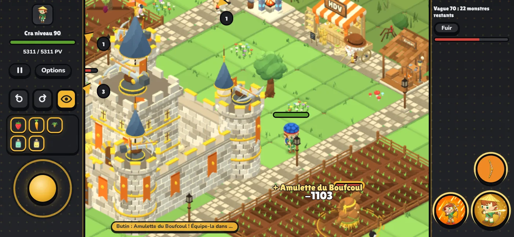

Dernière mise à jour14 novembre 2026
L'essentiel
- 💰 Les kamas suivent ton niveau : défis du jour, connexion, Arène, HDV.
- ⚔️ Palier 10 plus fourni, Fumée du Koulosse, armes légendaires du Dragon Cochon.
- 📱 Jouer au téléphone : joystick et sorts au doigt (à tester, vos retours comptent).
💰 Mise à jour du 14 novembre : les kamas suivent ton niveau
Défis du jour et série de connexion
- Up Chaque défi et le coffre du jour rapportent selon ton niveau : 14 100 kamas par jour au niveau 90 (7 100 avant), 8 100 au niveau 60. Jamais moins qu'avant.
- Up Série de connexion : du jour 1 au jour 7, de 15 % à 100 % d'une vague de ton niveau. 26 200 kamas sur la semaine au niveau 90 (2 200 avant).
Arène
- Rééquilibrage Les kamas suivent le prix de ton ticket : un demi-ticket à la vague 20, remboursé vers la 31e, 1,5 ticket à la 40e, 3,2 à la 60e (coffres compris). Même règle à tous les niveaux.
- Nerf XP : 3 % d'un niveau par vague jusqu'à la 30e, puis 1 %.
- Ticket : 95 000 kamas au niveau 100, puis +25 000 tous les 10 niveaux.
Hôtel de vente
- Rééquilibrage Les prix reviennent peu à peu vers la normale : un prix bas remonte en 15 min environ (50 avant).
- L'onglet Vendre affiche l'écart au prix normal en % (vert : bon prix, rouge : prix bas) et le prochain changement.
- La chute des bots de VSA (−40 %) est retirée.
⚖️ Équilibrage et correctifs du 12 au 14 novembre
Monstres
- Up Vague 95 : l'Ancestral Maudit remplace l'Ancestral (plus de PV, malédiction : +25 % de dégâts reçus).
- Up Ancestral : une tête détruite repousse à chaque plongée.
- Up Vagues 92, 93, 94, 97 et 98 : quelques Abraknydes, Sombres et Abraknes en plus.
- Rééquilibrage Vagues 91 à 100 : une Tronknyde sur deux fonce sur ton château au lieu de grignoter tes cultures.
- Up Bworker de l'île : un coup de hache au corps à corps (0,8 s pour sortir de l'arc bleu).
Objets
- Rééquilibrage Dragon Cochon : armes légendaires (Couperet, Arc, Fouet, sort Bain de boue) à la place du Heaume ; un Heaume déjà obtenu devient l'arme de ta classe.
- Up Fumée de l'arme du Koulosse : nuage vert plus grand, 3 % des PV par seconde (entre 200 et 550), boss compris, armure ignorée. Rester dedans recharge le poison (4 s une fois sorti).
- Nerf Bottes de cuir de Bouftou : +20 % de vitesse (30 avant), 2 000 kamas jusqu'au niveau 10 puis +1 000 par niveau. Nouveau look.
- Rééquilibrage Atelier : les carreaux d'acier demandent aussi 6 Laines de Bouftou (ou 3 noires), la torche une Écaille de Dragoeuf.
La ferme
- Nerf Noctiflore : 20 % d'XP en moins.
- Nerf Vague perdue ou fuie : la moitié du butin de la vague est perdue (sauf légendaires et pièces équipées).
- Palier 10 (vagues 91 à 100) : ta ferme reste de nuit à toute heure ; après la 100, nuit de 18 h à 7 h.
Interface et Casino
- Forgemagie : confirmation avant chaque rune, nouvelles icônes.
- Correctif Blackjack aux règles des casinos français.
- Correctif Plus de flash de jour au lancement d'une vague de nuit.
- Correctif Ta vie ne remonte plus pendant la pause entre deux phases d'un boss (Iop, pot de Menthe).
📱 Jouer au téléphone, et une interface plus claire
Commandes au doigt en combat (nouveau, à tester : vos retours comptent)
- Téléphone à l'horizontale : un joystick à gauche pour déplacer ton perso. Tu le lâches, il s'arrête et frappe ce qui est à portée.
- Tes sorts à droite : un appui court et le sort part tout seul sur la meilleure cible ; glisse depuis le bouton pour placer le cercle toi-même ; glisse sur la croix pour annuler.
- La caméra te suit. Deux boutons pour un quart de tour, l'œil (maintenu) pour voir toute la ferme, et des flèches au bord de l'écran vers les monstres hors champ.
- Options > Commandes au doigt : sorts en éventail ou en deux bandes, joystick fixe ou sous le doigt, distance et inclinaison de la caméra. « Jamais » remet les anciennes commandes.
Interface
- Fiche du perso, nouvel onglet Ma ferme : tout ce que ta ferme possède et ce que ça te rapporte. L'HDV ne montre plus ce qui est déjà au maximum.
- Options : Comment jouer s'ouvre dans sa propre fenêtre, avec toutes les commandes (PC et téléphone).
- Correctif L'arbalète affiche bien ses 6 niveaux.

